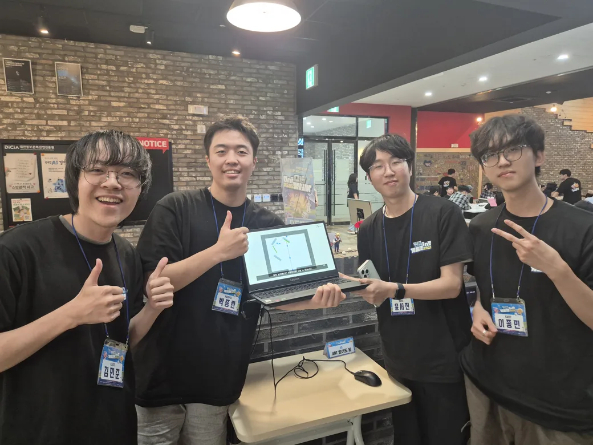
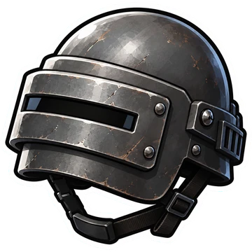
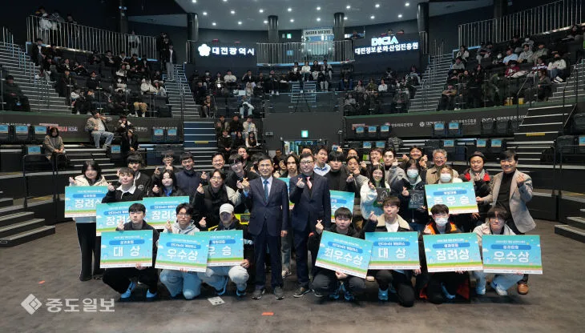
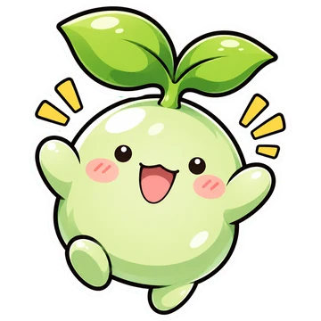
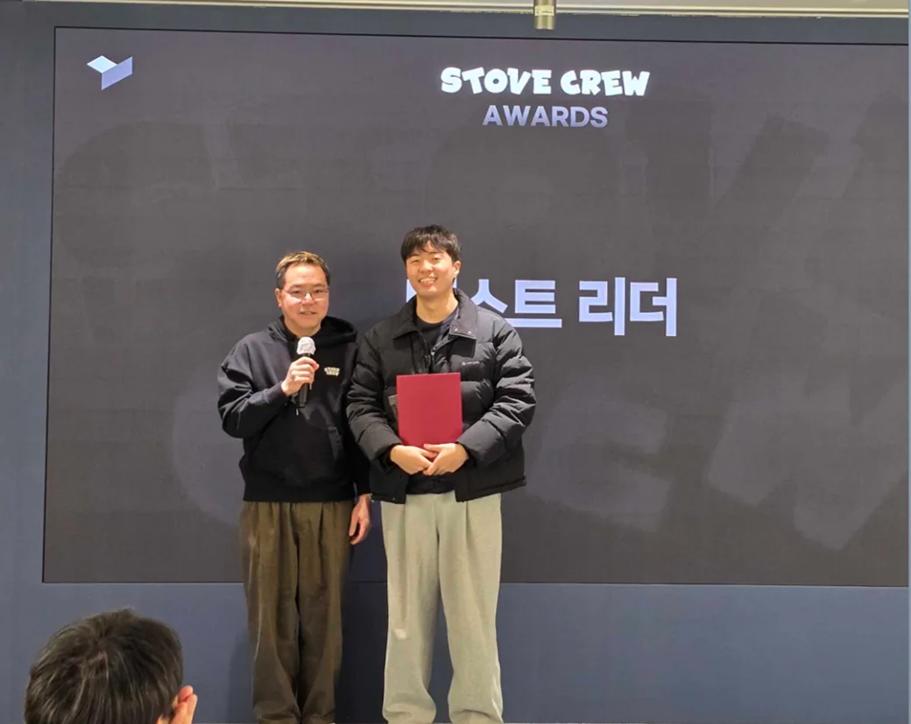
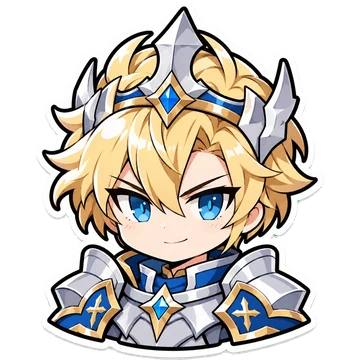
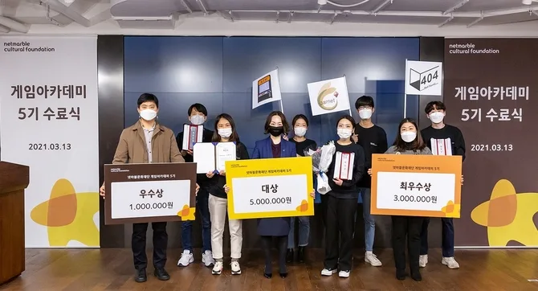
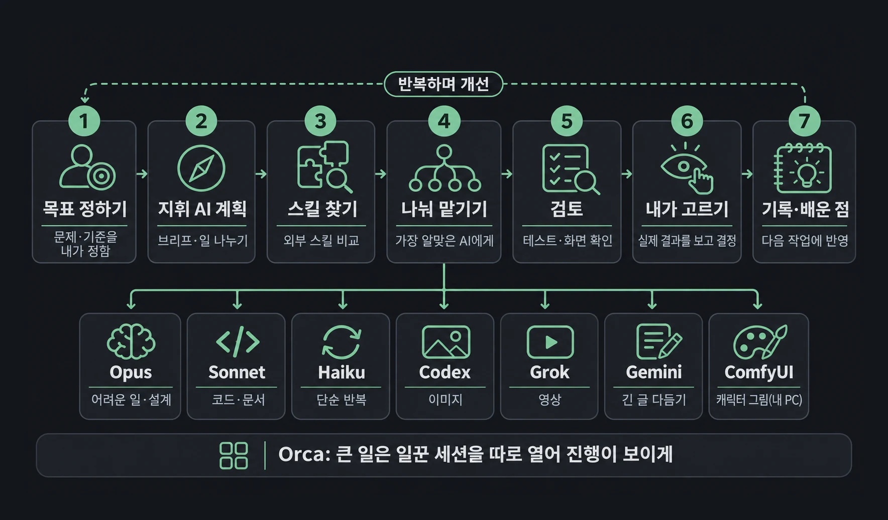

Awards
- 2026국가수리과학연구소장상대전 인디(inD) 게임잼
Reflectory · 기획 담당플레이

게임잼 주제 '무한'을 거울 사이에서 무한히 튕기는 플레이로 해석한 디펜스 로그라이크 게임입니다. 기획자로 참여했습니다.
- 문제 발생팀 빌딩 과정에서 아트 인원이 적어 저희 팀은 아트 팀원을 배정받지 못했습니다. 주제가 발표된 뒤에도 어떤 게임을 만들지 빠르게 정하지 못해, 첫날 밤까지 방향이 잡히지 않았습니다.
- 문제 정의와 해결먼저 아트가 없어도 큰 문제가 되지 않는 컨셉과 플레이를 찾는 것을 기획의 조건으로 삼았습니다. 방향을 정하는 방식도 바꿨습니다. AI를 활용해 각자 생각하는 '무한'을 제한 시간 안에 플레이 가능한 웹 프로토타입으로 만들고, 그 결과물을 보고 방향을 정하기로 팀과 합의했습니다.
- 갈등 해소합의한 방식대로 방향을 정했고, '무한'을 게임 플레이로 풀어낸 Reflectory를 제작했습니다. 그 결과 주제 해석과 독창성 부문에서 가산점을 받아 국가수리과학연구소장상을 수상했습니다.

2025대상대전 게임 브릿지Barrel Good Barrel · 3인 팀 · 팀장 · 기획플레이

탄막 로그라이크 게임입니다. 3인 팀의 팀장 겸 기획자로 약 8개월간 개발했습니다.
- 문제 발생팀에 아트 담당이 없었습니다. 또 학기를 포함해 8개월 동안 개발이 이어지면서 팀원이 번아웃을 겪었고, 연락이 닿지 않는 일도 생겼습니다.
- 문제 정의와 해결아트 문제는 에셋을 활용하되, 게임의 톤앤매너에 최대한 맞는 것을 골라 직접 수정하는 방식으로 풀었습니다. 번아웃은 학기 중에도 이어진 개발 일정이 원인이라고 판단해, 처음 설계한 로드맵을 전면 수정했습니다.
- 갈등 해소로드맵을 바꾼 뒤 개발 팀원이 일정 압박에서 벗어날 수 있었습니다. 완성한 게임으로 대전 게임 브릿지에서 대상을 수상했습니다.

2025베스트 리더상스토브 크루 2기쓰토루 · 팀장 · 팀 채널 약 3개월 운영채널

스토브 스토어에 입점한 인디게임을 직접 플레이하고, 리뷰와 유튜브 숏폼 콘텐츠를 만들어 마케팅하는 활동입니다. 팀장으로 팀 채널을 약 3개월간 운영했습니다.
- 문제 발생채널을 운영하며 가장 어려웠던 것은 팀원 간의 소통이었습니다. 연락이 닿지 않는 팀원이 생기거나 업로드 예정일이 어긋나, 콘텐츠를 올리지 못하는 날이 있었습니다.
- 문제 정의와 해결한 사람의 일정이 어긋나면 채널 업로드가 멈추는 것이 문제라고 보았습니다. 급한 날은 제가 미리 만들어 둔 콘텐츠로 채웠고, 같은 일이 반복되지 않도록 저를 포함한 모든 팀원이 여분 영상을 1개 이상 준비해 두게 했습니다.
- 갈등 해소만약의 상황에 함께 대비하면서 팀원들과 이야기하는 시간이 늘었고, 활동이 끝날 때까지 좋은 협력 관계를 유지했습니다. 그 결과 팀 내 평가와 주최 측 평가 점수로 베스트 리더상을 수상했습니다.

2020우수상넷마블게임아카데미 5기Rhythm Shooter · 4인 팀 · 기획 담당영상

외계 종족이 인간에게 힘의 원천인 음악을 빼앗으러 왔다는 컨셉의 리듬 기반 슈팅 게임입니다(Metal: Hellsinger와 비슷한 방식). 4인 팀의 기획 담당으로 참여했으며, 처음 경험한 팀 게임 개발입니다.
- 문제 발생코로나로 인해 예정되어 있던 대면 개발이 전면 취소되면서 모든 과정을 비대면으로 진행했습니다. 소통이 어려웠고, 결과물이 기획 의도와 다르게 나오는 일이 생겼습니다.
- 문제 정의와 해결글과 단어만으로 설명하려 한 것이 원인이라고 판단했습니다. 제가 구상한 리듬 기반 슈팅 게임과 비슷한 레퍼런스를 찾아, 이를 기준으로 다시 설명했습니다.
- 갈등 해소레퍼런스를 기준으로 이야기하자 소통이 수월해졌고 개발에도 진척이 있었습니다. 그 결과 Rhythm Shooter를 완성해 우수상을 수상했습니다.
Games Made with AI
AI Workflow

AI 구조 설계 이유
- 1 목표 정하기 · 2 계획과 일 나누기AI가 상상하지 않게
LLM을 쓸 때 가장 큰 문제는 AI가 알아서 작업하면서 빈 곳을 상상으로 채운다는 점입니다. 그러면 제가 처음 구상한 모습과 다른 방향으로 흘러가기 쉽습니다. 그래서 작업 전에 목표를 분명히 정하고, 브리프와 일 나누기 단계를 두었습니다. 목표가 분명해야 원하는 결과에 빨리 도달하고, 되돌리는 시간을 아낄 수 있습니다.
- 4 나눠 맡기기잘하는 AI에게 잘하는 일을
하나의 에이전트에 모든 일을 맡기지 않고, 장점이 뚜렷한 AI들을 함께 씁니다. 이미지 생성은 GPT(Codex)에, 글 다듬기는 Gemini에 맡기는 식으로 일마다 가장 알맞은 AI를 배치합니다.
- 5 검토한 번 더 확인
앞의 단계를 거쳐도 문제가 남아 있을 수 있어서, 완성된 결과는 AI에게 한 번 더 검토를 맡깁니다.
- 7 기록 · 배운 점다음 작업이 더 나아지게
작업이 끝나면 제가 고른 결과가 어떤 점에서 좋았는지, 왜 그것을 선택했는지 MD 파일로 남깁니다. AI는 다음 작업을 시작할 때 이 파일을 먼저 읽습니다. 그래서 비슷한 작업에서 같은 실수를 할 확률이 줄고, 작업할수록 결과물이 좋아지는 구조가 됩니다.